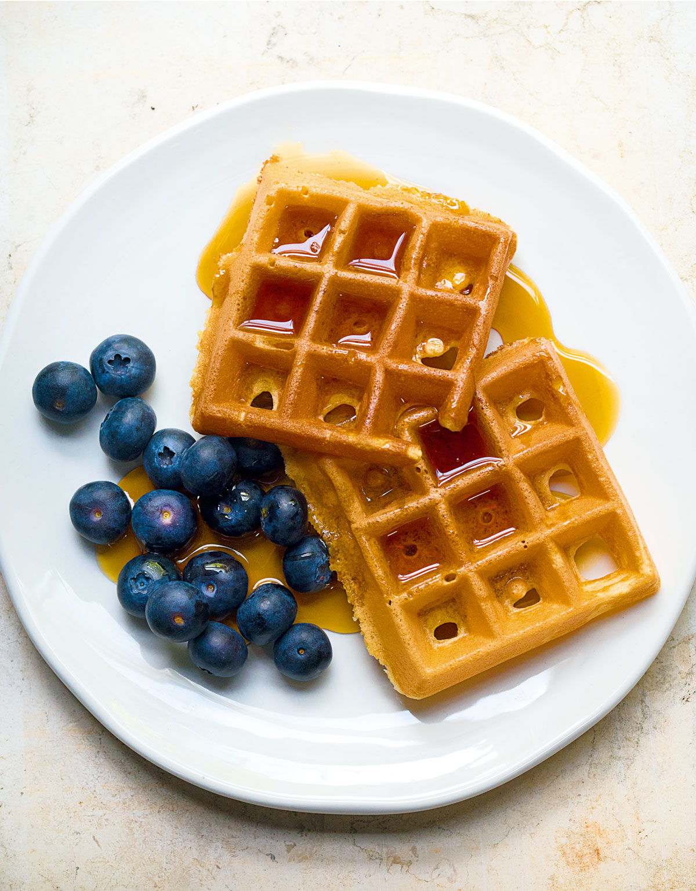

Protein Waffles

Description
Waffles. When you feel the need of a guilty pleasure, but is willing to sacrifice feeling guilty for the lack of moisture. These waffles will fill you up, without tearing at your soul.
Ingredients
- 200g Oat Flour (blended oats)
- 100g Cornstarch
- 10g Baking Powder
- 125g Vanilla Whey
- 125 Vanilla Casein
- 600g Eggs
- 750g 2% Greek Yoghurt
- ~240ml Water
Procedure
- Start by blending your oats to create the Oat Flour
- The dry ingredients are then mixed. Cornstarch, oat flour, baking powder, whey and casein
- These dry ingredients can be stored if you wish, which creates a dry waffle mix for your pantry
- Blend in the eggs and greek yoghurt, whisk it all together.
- Add water so that the mix becomes pourable.
- The casein will absorb liquid, making it more dry. More water will have to be added throughout the process
- Pour the waffle mix into the waffle iron
- The waffles can be frozen afterwards, and heated up in a microwave / oven for 5-10 minutes
Macros
This is gonna be a rough estimate, and will vary from your chosen products to mine. The total macros for this recipe comes out to be:
- 3456.75 Calories
- 94.15g Fat
- 274.5g Carbs
- 365.25g Protein
For me personally this usually comes out to around 23-27 waffles.
Say I get 25, this will be the macros for each waffle after dividing by 25:
- 138.27 Calories
- 3.76g Fat
- 10.98g Carbs
- 14.61g Protein